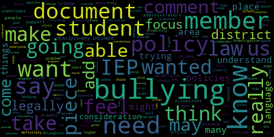
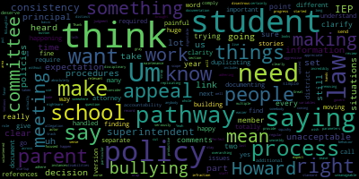

[Ruseau]: I would like to welcome everyone to the member school committees rules and policy subcommittee meeting for today, Tuesday, April 25 2023 from 430 to six. The agenda for today is we will be discussing, as approved by the committee on January 24th, 2022, the Rules and Policy Subcommittee will review the Bullying Prevention and Intervention Plan for recommended updates. This meeting is continued from our previous meetings, which were held on December 6th, 2022, March 2nd, 2023, and March 28th, 2023. If you would like to send me any comments or questions rather than raising your hand and just participating in the meeting, you can do that by sending me an email at pruseau at medford.k12.ma.us. Please include your first and last name, your Medford Street address, if you are not a staff member, if you are a staff member, just say that, and your question or comment. You can watch this meeting on Medford Community Media, Comcast Channel 15, or Verizon Channel 45. You could also log in on our Zoom meeting, which is https://mps02155-org.zoom.us, backslash J, backslash 974-999-49349. You could also call in on a phone by calling 1-929-205-6099. And the meeting ID is 974-9994-9349. You can also find our agenda and all this information on our website, mps02155.org. I'm going to call the roll.
[Unidentified]: Thank you. Uh, member Graham. Here. But it. Remember McLaughlin. Yeah.
[Ruseau]: fourth meeting. I actually thought this is our third, but it's our fourth meeting on this topic. I'd like to welcome everyone here, the superintendent, assistant superintendent, the director of Special Director of, what's your title, Jov? I'm sorry. Student Services. Thank you. That's the word. I knew it. I was having a moment there. And the principal, assistant principals, I'd like to thank you all for coming tonight and for our attorney, Mr. Greenspan, for making it. So we are going to, in our last meeting, we Discussed having a lot of questions for Mr. Greenspan, and he was kind enough to provide some answers and go through the current policy, the current bullying prevention and intervention plan, it's a mouthful, and provide his feedback. So unless anybody has anything they wanna say, I think it makes sense to share his feedback, bring up the document, share his feedback and go through those items one at a time. And then if anybody has questions about what he had to say, we can then discuss those. Does that sound fine to everyone? Excellent.
[Unidentified]: All right, now let's see. I usually am sharing. There it is. Share is the one button that's green. Okay. All right, great.
[Ruseau]: So for those that might be joining us for the first time, we are reviewing this extensive document to try and find a way to make it more usable, and to bring it up to date, as well as identify any areas where we want to actually make policy change. This is a copy of the document that Mr. Green's been sent back to me. And so I will just start at the top. He does indicate that by law, we must biannually That's twice every two years. Every two years for regulations, we have to go through this document and. review it, revise it, or simply approve it as it is. I will say that I'm not sure that, well, it says November 2022, I do remember doing that, but I think we just rubber stamped what was already here. So that's just a comment that we need to really get on this and make sure that it's on a schedule and that we are doing this as required. Scrolling down, some of the comments are really, pretty straightforward, remove the word new, it's not new. Anybody can just jump in since I will not necessarily be able to see you if you raise hands. So just jump in if I say something that you do wanna talk about, I'm gonna just keep going on things where I can't imagine, well, where I don't think that anybody will have something to say. This one here, I do believe we actually had numerous conversations in previous meetings, but, Right now the policy is for any student, and it should say student or member of the school staff, which I think is great because we had wondered about whether we could just incorporate that. So I have taken these comments, the ones that are similar to this one, for instance, it should say that. So I have a Google Doc that I have added that to, and we will look at that. Again, same thing, this policy is for students or member of the school staff. Okay, so this gets back to, I have to mute my alerts, I'm sorry, I keep getting email notices that are really annoying and distracting. Okay, this gets back to what we, so sort of our principal point when we started going through this document, there's a lot of duplication. So in this case, this simply says that we will create this very document so that this is that document. So we don't need to include language saying we'll create the thing that we're looking at.
[McLaughlin]: I have a point of information. It's my middle.
[Ruseau]: Yes.
[McLaughlin]: McLaughlin. So I'm assuming that the comments on the right are from Attorney Greenspan. Correct. Okay. Because they yeah, just the Katie me any LT is a little.
[Greenspan]: Yeah.
[McLaughlin]: confusing. So just want to make sure that folks know that the comments on the right are from attorney. Thank you.
[Ruseau]: Thank you. I have not even noticed it. Here we have, this was one that I sort of a question for The educator or administrative team here and the screen span mentions this a couple of different times that this is mandatory, it is not optional and I want to make sure that. We don't have to get into whether it is happening or not right now, but it needs to be happening. And I also don't have any concept of like, do we really have false accusations happening? Which we talked about extensively. But when one does happen, it's required that there is an educational component to it. It's not just like, hey, you accused somebody of bullying and you completely made it up. We're going to just suspend you or give you detention or whatever. And that's the end. It must include an educational component. So, this is a comment and there's nothing to change in this document, because it does say that will be part. I just wanted to highlight that. So this is one that when we've been going through this in the last three meetings, we've done a fair bit of, well, actually, this is the current one. Forgive me, this is not the new one we've been working up. But the law is that this is only for students. The suggestion is to remove staff members because a student may make an anonymous complaint against a staff member. the school, this says the school can't take disciplinary action, which of course, if an anonymous report comes in about a staff member and the district does an investigation and decides that it's valid, we can't have it in our policy that the district therefore can do nothing about it. That is kind of a, Dr. Edward Benson?
[Edouard-Vincent]: Yes, I just was going to add that if an anonymous complaint did come in, we would conduct an investigation. So we would be able, the district can always take an action. I just wanted to provide that clarification that, so if it's, you know, if legally it's not supposed to be in there, that's fine that it's removed.
[Ruseau]: Thank you. I do have a question, oh, Mayor McLaughlin.
[McLaughlin]: Thank you. Yeah, I think it needs to be parsed out a little bit because it's a little confusing in terms of the way I'm looking at it so if I understand it correctly, an anonymous complaint of bullying or retaliation will not result in disciplinary action taken against a student, obviously until an investigation is made, I would assume it says solely on the best on the basis of an anonymous report. So in other words, they're not going to take disciplinary action against a student, for example, suspending a student solely on the basis of an anonymous report, but I think that should there be an investigation based on an anonymous report and the investigation shows that there was, you know, reasonable cause for bullying or whatever, that then disciplinary action should be taken, can be taken even against the student. So I think this whole thing is a little bit confusing and I just want both Howard to clarify because obviously I think if there's a staff member disciplinary action can be taken. But again, I would assume it wouldn't be based solely on an anonymous report, which says solely on the basis of an anonymous report, that there would be an investigation to determine that the anonymous report was accurate. Because obviously, anonymous reports, you know, could just be somebody, you know, you know, creating a hoax or something like that. So I guess it's just a little bit unclear to me, and I think maybe instead of having it be like three sentences right now, which is essentially what it is in one sentence, that we might want to just break it down into individual sentences or something, because I'm not really understanding what you guys are saying. In terms of how, I'm sorry, just to clarify, in terms of how it applies to a student but not a staff member or a staff member but not a student based solely on the basis of an anonymous report, which I think anything based solely on the basis of anonymous report, disciplinary action wouldn't be taken because it couldn't be unless it was confirmed.
[Greenspan]: Well, I think this policy only will now apply to students, correct? Yes.
[Ruseau]: part, because we did add our members of the community, the school community or school staff in another spot. But this is the I'm sorry, which section are we in? Sorry, we're in the never ending section without titles.
[Unidentified]: But so yeah, this first part is about false accusations.
[Ruseau]: And then the second sentence is unrelated, it seems.
[Unidentified]: Yeah.
[Ruseau]: So as member McLaughlin said, like, you know, this should be broken, separated.
[Greenspan]: I would probably say no disciplinary action will be taken against a student on the basis of an anonymous report because, you know, Well, first of all, we're not gonna take any action against anybody based on an anonymous report.
[McLaughlin]: Exactly, based solely on an anonymous report. It's the solely, right? So that was the piece that I'm talking about.
[Greenspan]: Right, that's correct.
[Ruseau]: But what I'm trying to understand is, if there's an anonymous report against a student, we'll skip the staff and all that other stuff for now, against a student, and then our administration or the principal or whoever does an investigation and determines that there's something there, they are still allowed to Correct. Okay, good. Correct. Great. Member Graham.
[Graham]: Can you clarify when you say, when your comments say only includes a student, like, can you clarify what that like means in an overarching sense for the policy, like under the law?
[Unidentified]: Under the law, we're talking about a, bullying report, bullying student to student, basically, I believe. Point of information, or actually raising my hand.
[Ruseau]: Member McLaughlin.
[McLaughlin]: Thank you. I don't think that's the impression that we've had, Howard. And so I guess maybe that begs the question if you're saying that that is what is required. I think that according to what I saw in the DESE bullying standards, it can be a student or a staff member. I don't think it can be a parent or community member. I think you're right there. I think outside of the school is a different issue, although there's some gray areas around social media and that sort of thing. particularly with student and staff members. So I would agree with you that I don't think it could be a parent, caregiver, or community member, but the student and staff member, I think it can be based on what I've seen in terms of my own research on DESE and bullying. So I would say, yeah, includes staff members.
[Greenspan]: I think we should just clarify to make sure that no action is taken based on solely on the basis of an anonymous report.
[Unidentified]: and remove parent caregiver.
[Graham]: Howard, are you saying that under the law, an allegation cannot be brought against anybody but a student or a staff member?
[Unidentified]: I believe so, and I'll double check that. Okay.
[Graham]: I think that's what I'm trying to be clear about is like, what is, what are the, like the, the actor parameters that you're saying we need to adhere to, to make sure that we actually are adhering to those.
[Greenspan]: I'll double check that and get back to you by email.
[Unidentified]: Um, I do think, um, the.
[Ruseau]: But I do wanna be clear that, and we'll get to this further on, but that the, am I correct, Howard, that the only people who can file bullying complaints are students and staff?
[Unidentified]: Yes, I believe so.
[Ruseau]: So our form that is available for the community, frankly, on our website, parents, caregivers, Anybody in the community can't just fill it out to accuse a student or staff member of bullying. The bullying that is defined by this law, I mean, bullying has a broader meaning and set of situations, but for the purposes of our forms and our process and our authority, it's students and staff. I believe so, yes. And then when I mentioned that to member Graham, in a conversation we had earlier today, you know, the question was like, well, how does a five-year-old file a bullying report? And of course, in my mind, like hopefully the staff member that was around would be doing it, but that sort of seemed like a pretty good example of, I mean, and maybe it's just a matter of like whose name gets listed is the student, even if they're not typing, but. Member Ruseau.
[McLaughlin]: Yeah, thank you. I think that that's, you know, respectfully, Howard, I think that parents and caregivers and even community members can file a report of bullying. And I think that, you know, Joan, Ms. Bowen will have some background on this and maybe Dr. Cushing as well. But I think that they can, in fact, in fact, I know that they have. And that they are required to be investigated because there's going to be sometimes student sometimes you can imagine all kinds of scenarios where a student may be getting bullied and not want to file a complaint and the parent does right and because it's you know an important issue and what have you so there's a whole bunch of nuance around this, but I do think that we're confusing two issues and I guess this is what. I want to parse out a little bit for folks so that we're not right now, we went from talking about anonymous reports to a whole other subject. So I guess I'd like to, you know, finish up the anonymous report question comment, which I think the whole issue is that this is accurate. based solely, you know, solely on the basis of anonymous report. So, you know, that they can't be disciplined based solely on an anonymous report, which I would agree with, and I think is accurate. I don't know the question of whether a parent, caregiver, or community member can be disciplined by the school or anything else. Any other action can be taken against this them on the school. And that's where the nuance around parent, caregiver or community member came in for me, not about whether or not they can file a bullying report, because I believe that they can. So I think we're like mixing up a couple of issues here. And I would respectfully ask that maybe we break them down and, you know, finish one before we potentially start another.
[Ruseau]: Thanks. Thank you. I think the anonymous stuff, in my mind, we've finished that. But I do think we would want to tread very carefully about like, if one of our students goes to a restaurant and bullies the staff, business owners and staff members from a restaurant showing up at Medford public schools to file a bullying report is a nightmare. I wouldn't support that. And not that I don't think it should get addressed, but I mean, it does seem like an expansion that doesn't make sense in my mind. And I mean, I don't know that- Sorry, just a point of information here.
[McLaughlin]: I'm not sure what you're talking about. Are you talking about an anonymous report or an other report? I'm not sure what you're saying.
[Ruseau]: Well, the only anonymous reporting can happen by people who actually have access to our anonymous reporting system, which are students and staff. I mean, we're not going to take a piece of paper slipped under somebody's door and call that a report.
[McLaughlin]: Well, if I'm not mistaken, it's on the website. Well, it's on the website, if I'm not mistaken. It's not just... Yeah, you're right.
[Ruseau]: Sorry. Thank you. I forgot about that.
[McLaughlin]: Yeah. So in any case, I guess what I'm saying is, what are we talking about right here? Because I'm not talking about a student going to a business and something happening there, which obviously is another issue and is a whole other nuance. And I think that we could get into all of these various conversations and throw a million different scenarios in the pot and you know go go down that road and I don't think anybody has the time for that I think what I'm trying to say is that okay for the anonymous report. You know, I believe Howard attorney Greenspan is going to check on the parent caregiver or community member issue which I don't think can be included there personally because the school is not going to take disciplinary action against parent care giver or community members. Number one. Number two, I think the other issue around whether you know caregivers, or community members for that matter, can file a bullying report, which is different than an anonymous report, which frankly they can based on the website, but a bullying report is another question altogether. Certainly I know parent caregivers are, potentially community members can too. What happens if you have a kid in DCF custody who's only confiding in their parish member? Right. And they're being bullied. I mean, I would assume they would go to a staff member and have that worked out. But but we don't necessarily know. So I think, again, that's probably a question for Attorney Greenspan to answer in terms of who can file a bullying report. But I just want to say for folks watching and others, I you know, and certainly they can look on Desi's website themselves. But I firmly believe that parent caregivers can and in fact have so and I would defer to Dr. Cushing and Joan Bowen and the superintendent.
[Cushing]: Hi, thank you, everybody. So in looking at the model forms on the state website, it does list parent as someone who can fill out a report. So I think what it was, was a few years ago when we went through this, we basically cleaned up the formatting. And didn't really touch a lot of the substance but updated all of the forms, because the model form is a pretty abysmal form for actual practice. Right. It's two sided it doesn't offer a lot of space for writing and things like that so two years ago, we didn't go through and have these great in depth conversations. And I think what is a holdover is that parent, caregiver, or community member, what we probably did, what I probably did two years ago was put caregiver in where parent was because that's the language that Medford and other places are using. So I think if we just said student or staff member, that would be appropriate for whoever it be, and then remove parent, caregiver, or community member, because as people have mentioned, we don't have the capacity to get involved in that, other than say, recommend that maybe they need to file the criminal harassment complaint against those individuals with local law enforcement.
[Ruseau]: Thank you. Mr. DeLava, did you want to speak? I see your hand.
[D'Alleva]: Yeah. So I've been reading this thing like four times in front of me. No, no, I'm glad, but I just want to make sure we go back to what I keep reading was this is related to the false accusation, correct? Like we were getting confused on two different things of make a report who can't, but I keep reading this part and I'm like, okay, this is what I brought up last time. which is the false accusation part where we did sort of a bullying investigation. The parent did not feel that the assessment of bullying was accurate and therefore felt that somebody falsely filled out this report. So now how does that person get affected? I guess that's how I'm thinking of that.
[Ruseau]: Thank you. I appreciate bringing that back around because I think I got lost in this anonymous part. And So anyway, so I think we can, Dr. Cushing's hand is up still because he needs to talk. I think we can move on from this paragraph. I think one thing that's very evident, there's no structure to this. It's just a long dump. And so we will tease those things apart between anonymous versus filing a bullying report, which is not an anonymous report. And then I guess I will ask the question, and I forgive me for not remembering this, but is anonymous reporting even part of the law? It is, okay. Which I find sort of fascinating. It's like, how can you have a form to fill out if it's anonymous? There's no form if it's anonymous. It's the same as slipping a piece of paper under somebody's door and thinking that that's a report. Not that I don't think we should have anonymous stuff, but I guess we'll have to normalize that and figure out how to bring it together. But we should move on to the next comment. This was another one of those, make sure we're doing it, the educational parts. Actually. make sure this is happening since it is in the plan. This is more than what is required for the regulations.
[Unidentified]: I have a point of information.
[McLaughlin]: Sure. Just what is, how are we going to make sure that that is happening? So I think it needs to be built into the school calendar.
[Unidentified]: Yeah, I mean, I think,
[Ruseau]: Oh, that the plan gets reviewed? Yes. We have our policy on annual, on reports and presentations. So I think that we might be able to slip that in there as something like, because we have things that are every couple of years or even every three years, and we can have it in there that will receive a presentation with the recommended edits and changes. And that sort of will work backwards from that. Remember, Graham?
[Graham]: Um, Howard is your point that the law requires us to do this every two years and we are saying we are going to do it every one year. And is that really a decision that we need to make?
[Ruseau]: Right.
[Graham]: I think that's the question.
[Ruseau]: Got it. Thank you. Um, I didn't quite get that. Thank you. Um, unless anybody has any recommendations differently, I think we should switch back to doing the two years. I mean, we haven't even been keeping up with that. Um, So. I agree. Good idea.
[McLaughlin]: Do we need to make a motion or do we just want to say yes?
[Ruseau]: I don't think we need to make a motion. All right, that's fine.
[McLaughlin]: Then I agree.
[Unidentified]: Thank you. Excellent. Next up we have
[McLaughlin]: Member Musso, can you just hover over that item so we can see the comment open? Yeah, because we don't know which one. Thank you.
[Ruseau]: You're welcome. So this one says, this seems very broad. It might not be possible the way it's written. This is the document that all unacceptable student behavior and treating these incidents with standard school disciplinary procedures. Yeah, I mean, this would be, I mean, every kindergarten teacher would spend their whole day just writing up reports. And they wouldn't actually spend time with their students. So I certainly understand that this is wildly broad as written. But perhaps we actually don't include this and and I mean, we have other policies that say how things should be reported and those can stand on their own.
[Unidentified]: I'm just going to go in the other room while this finishes, Jay. Member Graham? Could we just remove the word all? Yeah. We could do that.
[Graham]: Because I think we do want there to be an expectation that schools are documenting instances of unacceptable behavior. I think the two variables there is all is a really aggressive word to use when you talk about documenting things that happen in a school. And then I think the other squishy word there is unacceptable because that means very different things to very different people. Um, but I think if you take out all, I could live with the gray area and the judgment required to say, is this like infraction, like something to document yes or no. Um, and to leave that in the hands of the, of the buildings, but to set the expectation that we do expect documentation from schools to be happening on a regular basis. because I think that part is important, that that expectation is clearly coming from the school committee.
[Ruseau]: Right. And this has been the policy since 2010. So it's not like we're expanding. In fact, we're sort of contracting by taking the word all out. Member McLaughlin?
[McLaughlin]: Right. I mean, I think this gets back to the incident report issue that we've been talking about for some time. And so I agree that all should be taken out, but I think that we need to think about if they're documenting incidences of unacceptable student behavior and treating these instances with standard school disciplinary procedures, then I would say, one, parent caregivers need to be notified. And two, with the understanding that there are unique legal requirements and procedures for students with disabilities.
[Ruseau]: Yeah, exactly. Thank you. That's right. Yes, we've talked about that on the floor as well. And I think we don't want to put all that into this one bullet. But I think that's a really good point.
[Graham]: But I would consider that out of the scope for this policy, because there are other policies and procedures that govern all of those things that are separate and distinct from this. policy.
[McLaughlin]: But I actually no, I disagree because I think that it needs to be we talk about communication all the time. And I think that yes, while those other policies are there, that's important. But people who are reading these may not know that those other policies are there, whether their parents or caregivers or anybody else. So I think it's really important that we reiterate things throughout our district in terms of policies and procedures and that folks are aware of them. So I would actually disagree. I think that there should be either if it's separate bullet items for, you know, how the incident reports are handled and or a separate bullet item for, you know, understanding legal procedure around. students with disability and manifestation of disability. And then I would also say, I mean, I would go back to the to the unacceptable point I mean I hear what you're saying but I think it is a value statement and I get, you know, student some student behavior is unacceptable some student behavior is, you know, anything else, but if we're trying to think about student strength based language, you know, we can just say during documenting incidences of student behavior and treating these incidents with standard school disciplinary procedures as needed or something like that. So that we're, you know, I think that putting a value statement on things is not necessarily helpful. And if we want to be strength based as a district, I think we should be reconsidering those. So two items I have there. One is, you know, two distinct bullet items around, you know, or included in this bullet item, I don't care around You know incident report incidents, you know documentation of incidents are shared with you know caregivers and. There is an understanding that there are unique procedures and policies for students with disabilities. so that people can cross-reference that. And for more information or something, go here. But I think, again, some family members, caregivers who are invested in looking at the bullying policy might not know about the special education students with disabilities laws and policies. And so having that reiterated, I think is important.
[Graham]: I would be fine with removing unacceptable, but I am absolutely against duplicating information across multiple policies. a disastrous nightmare. I think if we want to put a link that references, um, standard disciplinary procedures, uh, for students with and without disabilities, I think that's totally fine. As long as it's a link that sends somebody somewhere relevant. Um, but I am not in favor of replicating information into this policy. It just, it will make it unmanageable and unwieldy. And I don't think we, uh, as a district have a track record of maintenance of our policies and procedures, and we're just making it worse by duplicating information.
[Ruseau]: Thank you. Yes, I just wanted to add that not related to the content of the conversation, but certainly that good policy should not contain other policies. other than a link to them, because if we had a high quality document management system and our policies were all up to date, I think there's a real case to be made for inclusion in other policies, language from other policies. But that would, of course, at the same time when we change that other policy, the system that we don't have would literally tell us, hey, you have to go change policy X, Y, Z, because this language is in there. At this time, it is literally a manual process or anybody who happens to remember, and we definitely cannot handle that at this time. You know, we have this problem with the handbooks, frankly. We update policy, some of that policy gets stuck into the handbooks because it has to be there, but then we update the policies and the handbooks don't get updated. Or somebody updates the handbooks as if they're not actual policy and the policy says something different than the handbook. So I do think trying to make sure we provide a link to whatever other policies are relevant here is super important. And I think we've started to do that in other policies where we say something and we just literally say, see policy, whatever, so that folks can see the whole thing. It's not perfect, of course, but I think considering we also want to change those other policies, I think, because the law changed, we don't want that work to become this work, because in this work, we'll be meeting on this policy for the next five years straight. And we do have to meet every two years on it as it is. So that's my opinion. Dr. Edward-Vincent, I see your hand's up.
[Edouard-Vincent]: Yes, thank you. I just wanted to weigh in just to say this is definitely a very rich conversation. But I also wanted to just say this is now our fourth time we have official legal counsel on the call helping us pass through this bullying document. And I actually feel like even though the original document was too long, We should probably really make a concerted effort to see how we could really get the document down to be a manageable size document, so that it isn't overwhelming to families and to parents. And focus on the key, the key pieces that need to be in the policy, following the law, because I think it is true, if we end up echoing what was just shared by member Graham and member was so that if we have. We can make references to other policies, but we haven't gotten into the habit of just being able to clearly cite a policy because the policies are on, you know, that's the whole point of the subcommittee, trying to get us to a place where we're going to have clean policies that people will understand that are easy to translate, that are digestible for all stakeholders, for them to understand, okay, this is what I need to do when bullying takes place. So I almost feel like now that we have the language or we have highlights for the areas that need to stay legally because of the law, let's stick with those pieces. And then again, if it means creating a separate policy, but freestanding, I would be in support of that because we're only on page five and if at this rate, we'll be lucky if we even make it to page eight by six o'clock and there are many, many, many comments that need to be adjusted. Some of the comments I think instead of student member of the school staff, you know, like some comments might be able to just be tweaked and everyone will be able to accept those comments, but also just for us to feel like we're able to make progress because May is next week. And to member Ruseau's point, like if, if we can't at least, you know, make a decision to get through this one policy during this school year, um, We're going to be still working on this policy come September, so that that was just my. I encourage us to kind of like. focus on the bullying, focus on the key pieces that we need to focus on and not mix multiple policies. This was our attempt a few years back trying to update it. And as we can see, there were many flaws. There were areas that were repeated unnecessarily. And I just feel like we should really try to get this document down to at least half its size if that's possible.
[Ruseau]: Thank you. I do think it's definitely possible. Member Graham and Member McLaughlin, if you could just try to limit your comments to another minute so we can move on.
[Graham]: I appreciate that this is incredibly painful and I wish that lots and lots of people before the people on this call had taken seriously this work in a way that would have made this easier, but we are here and we have to do this work and it's tedious and painful, and I think we're making progress. So, um, I just want us to stay focused on that and to button it up at the same time. Um, in the last meeting, I volunteered that once we had clarity from our attorney about what these, um, things were that we could or could not do, um, that I would then go through and take a cut at trying to make this digestible for people. That's not work I can do until we get through these comments. I'm still happy to do that. I'm happy to do that after this meeting, but it is not work that is productive until we have clarity from the attorney, which is I think the whole point of this meeting.
[Ruseau]: Thank you. Member McLaughlin.
[McLaughlin]: Yes, I couldn't agree more. I think we need to get to the attorney comments. I do want to note for the record that there are different and very disciplinary procedures for students with disabilities. So I would like a link there. And then I would also say we still haven't addressed the issue of incident reports to caregivers. So we need to think about that at some point.
[Graham]: Can you just provide me those links member McLaughlin, and I'll just wrap them into the next version.
[McLaughlin]: links for the disability, the protocol for students with disabilities. Yeah, I can do that. There's not a link for an incident report because we've talked about this on the floor. So that's a separate issue. But the disability one, sure, Joan or I can get that to you. Thank you.
[Graham]: Yeah, and then I can strap it in.
[Ruseau]: Thank you, everyone. Next is, this comment is about that we have specifically named the training folks, the company. I don't know if we use those folks, but even if we do, I think it makes more sense to not have it named. And I don't know, do we even need to list this at all, this item?
[Unidentified]: Howard? Is this level of detail required? No. Okay. Thank you. Okay. So we'll strike this then. Let me just get that into my notes.
[Ruseau]: Next up. is we have several pages where there's not a lot. So that's wonderful. This is the statement which we have said multiple times. This is literally a copy of what's above. So that's all the same thing. So that whole section gets chopped out because it is the same section duplicated. Okay, so that this whole couple of pages is just gone because it's the same thing. This, This comment is that the public involvement section can be removed. These are really getting the policy up from the ashes or whatever the right analogy is there. But that is not something that needs to exist now. That was for the day one version of this. So that section can be deleted. Assessing needs, it says outdated. I also wonder if Mr. Green's been, can we just delete this section as well? This feels like the getting it started 2010.
[Greenspan]: It's all right, right.
[Ruseau]: Okay, thank you. And then planning and oversight, same thing. I'm not sure why I keep getting that little pop up.
[Unidentified]: Parent and,
[Ruseau]: There it is, parent and community involvement. This whole section here, the comment is to review and make sure this is still relevant.
[Graham]: It certainly looks very- I mean, this particular section is about startup, isn't it?
[Greenspan]: I think so.
[Graham]: So is that required, Howard?
[Greenspan]: I think it's stale, right?
[Unidentified]: I mean, we've- Yeah, I mean, I think there needs to be clear comments about
[Graham]: you know, the role of parents, but not in how it was started.
[Greenspan]: In developing policy, because that's all ancient history. Yeah.
[Graham]: Perfect. Thank you. Great.
[Ruseau]: Thank you. Howard, this one here you said, you know, you asked, does this need to be updated? We had previously met and thought, this doesn't even belong in here. I went to a couple of other districts and they don't have it in here. I did see it, Malden does have it, but I looked at other districts and they don't have it. This feels very much, frankly, is inappropriate for policy considering our specific ban on curriculum. So we had talked about in previous meetings cutting this whole section out. It's also very much inaccurate. Dr. Edward Benson.
[Edouard-Vincent]: Yeah, no, I was gonna say, I was definitely in support of removing the scope and sequence. I think probably in 2010 or when that was added, it was appropriate, but where we're gonna be changing programs and I don't think any of this is really necessary for what we're doing right now.
[Ruseau]: Great, thank you. And I did notice on the, I think it was the Lexington policy. At the very end of the policy, they had three or four links. And one of them was that. And, you know, that's a separate website. If we create that website, and we can add the link to it. But so this is still all, I'm sorry, these are all still the, I'm sorry, did I go too far?
[Unidentified]: No. I don't think so. Keep going, keep going.
[Ruseau]: Yep, these are still curriculum. This one here, faculty and staff, actually, I'm just going to keep going with these comments instead of rehashing what we've already talked about, sorry. Here we have, this says this is an old definition, needs to be updated to include school staff, which we don't have to talk about, I can just do that. This one here says retaliation language should be removed and have it stand on its own and not as part of this definition. Howard has not seen the version of the definitions we had started working on. So I think that we agree that the definitions are a bit of a mess here. So this does not make any reference to anything that anybody understands. Also an asterisk, does it have a, home. Anyway, so that that'll be cut. If I go too fast, just tell me to slow down. Okay, this is the unacceptable language conversation we just had.
[Unidentified]: So I think it's vague, but there's that all. So we get rid of the all member McLaughlin.
[McLaughlin]: Again, I think just using the same as you know what we've done in the previous section in terms of the value language and the and the all but I think that it also begs the question again I mean I'm seeing incident 1234 times on this page. I think we have to put somewhere in here where the incident reports are going for family and community engagement as well. So I am making a motion that we include a segment on incident report, any incident reports created are also shared with caregivers and family members.
[Ruseau]: Well, isn't that a conversation I'm having in the school committee already?
[McLaughlin]: Yeah, we already had it and we already agreed on it. So I'm just saying that if we're going to, I'm wondering where we're putting it because we haven't done that yet.
[Ruseau]: Oh, I see what you're saying. Sorry. So yeah, that we agreed to do that, but where?
[Cushing]: There is just, sorry to interrupt. There is a separate policy on incident reports just under the school communities purview. So I don't know if that should be something that should be reviewed on incident reports as opposed to putting it here.
[Graham]: If we have a separate policy, we should review that policy and make sure it is updated as well.
[Ruseau]: Okay, I'll add that we need to add the links to that policy.
[McLaughlin]: No, I think it was said we need to review that policy. So I guess I would ask that we look at that policy at the next bullying meeting that we have on this policy because the issue is and the issue that was on the floor is that we've had families historically that have not been made aware of behavior incidents and then students potentially are getting suspended or disciplined or whatever else and student and families and caregivers are not aware of this. So I believe we already decided on the floor that this was going to be something that we did. I mean, we can clarify when we come back to report out on this meeting with the other members of the committee if we'd like to where that information should be, but I think it's important that the incident report information is in the bullying context, because we're now asking families to go to multiple different places to understand these policies, where on one hand, I understand what you guys are saying about wanting to narrow down the scope and making sure that it's simple and understandable. On the other hand, we're putting the burden on parents and families to find out the other information that accompanies this. So whether it's a link, that's fine, but I don't want to wait another, you know, till again, September, October, whatever, till we're dealing with the incident report, because it is intrinsically connected to the bullying report. So I would ask that it be included in the next meeting that we have on this issue.
[Ruseau]: Member McLaughlin, I mean, our rules require that any policy that's going to get changed or reviewed has to be submitted through the full committee before we can review it. So we can't review another policy here in this meeting. Not right now.
[McLaughlin]: Right, not right now. I know that. I understand that. That's what I'm saying. When we report out.
[Ruseau]: But I mean, we can't have another meeting and then do it then either. If you want that to be updated, you have to submit that to the full committee to send it to subcommittee.
[McLaughlin]: Right, which we can do at the next meeting and have it combined with the bullying meeting for the next RPI meeting.
[Ruseau]: I'm not sure. Anyway, next meeting, it doesn't matter. We don't have to have this conversation.
[McLaughlin]: I'll just do it at the next school committee meeting. Thank you.
[Ruseau]: Thank you.
[Bowen]: Yes, I just wanted clarification within this document it talks about incidents but are we referring to bullying incidents specifically, or all behavioral incidents so I think it's it's two separate things so I think the behavioral incidents that member McLaughlin is talking about like that is a different form or reporting that we need to provide to parents. But I just want to be clear that when we're talking about all incidents, it's about bullying incidents within this policy. And that there is a section that the parents, I believe I read, there's a section that the parents are informed when a bullying incident is either reported because of their student or that their student's being bullied and that the investigation happens and then they get the results of the bullying investigation. But I just wanted to make sure that I'm thinking the correct way with this.
[Unidentified]: Would that be further down under number four? Well, I mean, what I'm hearing Joan say is like, this policy is about bullying. Right.
[Ruseau]: That's it. It's not about all incidents that happen in school.
[Unidentified]: Right.
[Ruseau]: So I think that making sure we stay focused on that part seems important because as Mayor McLaughlin said, like, you know, putting too much on a family to like come to this and see this and be like, oh my God, I need a PhD to figure out what this says, or I'm gonna need two hours to just read the table of contents. That's not a service to anybody. And I do think that that's a very much a, you know, a hard, you know, thing to, a hard needle to thread. Too much and too little are both bad and they're bad in different ways. The current policy is 38 pages long. I'll go out on a limb and bet there were zero people in Medford who've read the whole thing other than us. They might've scanned it, but nobody read it for a reason. But anyways, let's move on to this. Okay, the comment is related to if the incident does not meet Sorry, I have to click away. Does not seem to meet the definition. Continue to treat the incidents with standard school disciplinary or conflict resolution procedures. And Mr. Greenspan says this almost seems like a pre-screening process, and I'm not sure DESE would approve of this based on recent PRS findings. they may want to consider revising this procedure. It also needs to be the same as the school committee policy and student handbook procedures for everything to need to be checked for consistency. So as I am understanding what is being said here is we don't wanna have it in our policy that some individual can just like look at it and decide for themselves that this is not gonna go through the process. Is that correct? Yes. And so things go through the process. The process is complete and incomplete, meaning it's got a start and an end for everything that comes in. And there's not something that sits at the front and decides whether it gets to go into the process.
[Unidentified]: So the language, if it does not seem to meet the definition, Do we just strike that? I probably, I was just going to suggest that. Okay. Um, administrative investigations, um, principal or designee. I think we have to talk about that response plan. Um, So this is, we can require outside counseling.
[Ruseau]: The district would pay for it unless the student has been charged with a felony or expelled, in which case we can require parent-sponsored counseling. Mr. Greenspan says just remove it because this does not apply.
[Unidentified]: I'm going to just copy that.
[Ruseau]: The student has, okay, let's see. If a student has an IEP, work with his or her liaison to determine whether the behavior is a manifestation of the student's disability. And this says, this is only required if the student is removed from school for more than 10 days. I would advise to say to notify the liaison who may want to reconvene the team.
[Greenspan]: Can I see your hand? I want to defer to Joan on this too, Mr. Chairman. Thank you. I see your hands up.
[McLaughlin]: Yes. Also, it's IEP or 504. I'm not sure where you're going.
[Ruseau]: Sorry, I was just looking for the title of the section we're in because I was confused slightly. Sorry.
[McLaughlin]: Okay, so I believe it's IEP or 504. And I agree with Howard that it is 10 days but Howard it's 10 days and or a pattern of removal so it's not some people think it's 10 consecutive days. It can be 10 days or a pattern of removal. So what some administrators do, and I'm not saying in this district, but sometimes what we see administrators might do is suspend a student for less than the 10 days and or do partial dismissal so that they're sort of underneath this law. So I think that, again, this needs a link. I would also defer to Joan on the link and the specifics. It does get very nuanced. And I think that they should be, you know, somebody else needs to be involved that understands this better, whether it's the director of student services or the attorney or somebody. But I would definitely say add 504 and then nuance around the move from school for more than 10 days, because it's a little bit more than just that.
[Ruseau]: Great, thank you, unless there's an objection, and I've modified that. Next up, notify the aggressor of his or her rights in the process to appeal your decision. There is no appeal process in the law.
[Unidentified]: So do we just strike number 10? Okay, just. Yep. Next step is response option.
[McLaughlin]: Sorry. Remember Ruseau point of information, but there's no appeals process. That's true, Howard, but there is, there are other procedural safeguards. So there is potentially the office of civil rights. So I just want to be really clear that like, if people feel so Joan, I would ask that you maybe we have Joan answer some of this too.
[Bowen]: So I'm not really sure what the question is, if you could repeat that.
[McLaughlin]: So number 10 says notify the aggressor of his or her rights in the process to appeal your decision. So Howard saying that there's not a process to appeal the decision regarding what the school district decides on bullying, but there are other procedural safeguards such as the office for civil rights.
[Bowen]: I'm not sure how those would be connected. If it's a bullying incident and I guess I'm not clear of what number 10 is asking or saying. So if they.
[Ruseau]: If I may, I think number 10 is we have done the investigation. The aggressor has been, we've identified that it was bullying and we hand out a disciplinary action. The student, and or their family does not have the right to just appeal that.
[McLaughlin]: Oh, okay, I misunderstood. I'm sorry, I was misunderstanding, Member Ruseau. I was thinking that this was saying that there was a finding of no bullying and the aggressor and the individual can be notified of their rights and that they could appeal if they wanted to, meaning the individual that made the bullying. And so I guess it also begs the question, what happens if, There is no, and do we have that farther down or Howard, can you respond to that? What if there's a finding of no bullying? Because I believe that there's also no appeal process for that in terms of the school district, but there is other procedural safeguards. So that was the sort of nuance that I was trying to tease out.
[Greenspan]: Yeah, I mean, there's no appeal and I mean, how far do we go in notifying people of outside agency complaints. Do you know what I'm saying?
[Unidentified]: I don't think we're obligated to tell them that. I mean, if I may, I mean, we could, how far do we go is right.
[Ruseau]: I mean, we could go all the way to the US, the federal government civil rights division,
[McLaughlin]: Yeah, no, civil rights is the federal government. But the point is, is that we can do a link there then, because if you want, because I'm just saying from Joan's perspective too, that there are procedural safeguards and we do have to notify families of procedural safeguards. So if there's a bullying incident that does involve a student with a disability, for example, and the bullying decision has been found unfounded, in the district by the district personnel to say that there's no appeal is not accurate for students with disabilities, because there is, there are procedural safeguards, which include the Office of Civil Rights or ERS. So I think that it's getting, I don't know, Howard, I would defer to you and looking, maybe talking with some of the, you know, too many Hesse and Lehane folks and see, but I think it could be really nuanced there.
[Greenspan]: Yeah, I would defer to them on this, if we wanna get.
[McLaughlin]: So maybe Joan, if you would, through member Ruseau, if through the chair, if we can have the director of pupil services reach out to our special education representatives to clarify this question or issue, I would ask that so that we're clear that if we're telling people that there's no right to appeal their decision, that we need to be accountable for that.
[Ruseau]: But this is, the aggressor is being told that they have been found guilty, for lack of a better word, of bullying. This is not the other stuff.
[McLaughlin]: I understand, but we are going to have to, I think, address the other stuff as well. And so that's why I'm bringing it up. So I understand that this is for the aggressor. I get that. And so the other issue is that if the decision is found not bullying, then what? Because we haven't put that in here, number one. And then number two is, what does that actually mean? If there's no appeal, what are there? And so I think that those are the two issues that I'm trying to respond to, because if we're saying we're notifying the aggressor of his or her rights in the process to appeal the decision, we are also at some point notifying if we find no bullying, we're notifying the families that no bullying was found, and we have to tell them what that process is after that, if there is one or not, in my opinion.
[Ruseau]: But that's the next two pages down in the notification section, which I feel like that's
[McLaughlin]: Okay, that's fine. But I'm just saying that if it's as it relates to the appeal, I want to look at that when we're looking at it two pages down specific to the no bullying, because it is it's very legally complicated. And I think, you know, has he to me and Lehane do need to look at this to some degree.
[Unidentified]: And there there's special education representation legal team. Right. Member Graham.
[Graham]: Howard, are you saying the law does not require an appeals process or are you saying the law prohibits an appeals process?
[Greenspan]: I think what I'm saying is there is no appeal process within the district to this finding.
[Unidentified]: But could, what does the law say we have, does the law say we can't have one?
[Greenspan]: No, but if we're going through all these steps, what is it gonna be? What is the appeal going to be? To who?
[Graham]: I mean, most of these issues are all being arbitrated by the principal, right? Or the assistant principal in the building. I have heard from countless parents who have just vehemently disagreed with the process that they have gone through as they have filed bullying complaints. And I have huge hesitation to say that like, there is no process beyond what the principal like may find or not find to be having a continuing conversation with the superintendent. Like I know she is the, she is the like appeals officer in all kinds of places. I am wildly uncomfortable that we're gonna take something as serious as bullying and say there's no appeals process. Because I have just heard, I have heard so many stories that just give me huge pause at the consistency and the efficacy of the decision-making happening over time. And I think there needs to be a pathway that rises to the level of the superintendent.
[Ruseau]: Remember Graham, I certainly agree with everything has just been said about no appeals process. I think some of this is education and communication, because, you know, the law is clear. There's no such thing as a one time incident that is bullying. that does not exist. It does exist to the parent and it does exist to the student and to anybody with a rational brain, it's obviously a real thing. But the law has the word repeated and without repeated, it is not bullying and not part of this policy. But I don't think that incidents resulting in disciplinary action can't happen still. That can still happen. You just can't fill out a bullying form and think that you're going to get a determination of bullying when it's a one-time thing.
[Graham]: The stories that I hear are repeated, consistent, persistent issues where still no bullying finding has been issued. That's obviously a problem. That is our reality. We have students unenrolling from the district because of the because of how their bullying incidents were handled or not handled. Again, in the eyes of the parent, I understand there's a lot of moving parts here. I totally get it. I'm just saying like with all of those moving parts, I would like to see there be some sort of centralized accountability path that gives us a feeling of reassurance and consistency that we can't have seven plus people being like the kings of their kingdoms and interpreting this policy any which way that they might. I think there has to be some pathway that drives to consistency on this decision-making.
[Unidentified]: Mr. Greenspan, I saw you picking something up.
[Greenspan]: Did you wanna? Well, I wouldn't wanna just make an off-the-cuff decision on the appeal process? Is it a de novo appeal? Is whoever gonna review this gonna go through everything again? So I'm hesitant to just give an off-the-cuff response.
[Ruseau]: I feel like this is a different conversation that we do have to have, or at least the superintendent has to have, because I understand and agree that there's repeated incidents that are continuously determined to not be bullying. That should cause incredible alarms, frankly. But those alarms are not school committee alarms. Those are supervision alarms from the superintendent to the principals. Um, and is there a way to put this into policy so that we can make sure those alarms can go off is totally something I would be up for.
[Unidentified]: Um, um, never Graham, did you want to say something?
[Graham]: Uh, no, that's just something that I think is still very much an open item for me.
[Ruseau]: Okay, I think it is too for me as well, but Dr. Edward-Vincent?
[Edouard-Vincent]: Yes, I just wanted to comment because when the bullying investigation takes place and you follow the flowchart, there are pieces that you have to look for to make the differentiation between is it truly bullying or is it a disciplinary incident? And so sometimes In some people's interpretation, it could be defined or interpreted to be bullying. And in some situations, it's a disciplinary incident. And I just want to say that we do have some students within the district that may need additional supports based on their specific learning needs. And so sometimes in those areas, we might have higher incidents or higher occurrences of certain things that take place. And as a result of the IEP, for example, and we realize that it might be identified as part of a child's disability, we're not going to be identifying every single incident as bullying. So I just, I don't have a problem with greater accountability, but I also just want to say that sometimes we're dealing with situations that there's an area of gray that has to be taken into consideration. We had specialized training with all of the administrators around bullying. We worked with Murphy, Hesse, Toomey, and Lehane to really understand what is it that administrators legally can do. And I don't have a problem with having them come back to redo the training, but I do feel that they, you know, they clearly explained to all the administrators, you know, what was acceptable and kind of helping us really parse out the law. So if there are other situations that, you know, family members have a concern about maybe how something was handled, they can always bring it to the superintendent's attention. But I just don't want to have like blanket statements written into a policy and then there are other documents or other pieces of information that we have access to that, you know, aren't going to be, taken into consideration the same way. I just want us to be careful that we're not trying to over legislate this bullying policy. I think we need to be clear that this particular document is specifically about bullying and what the law says. And we truly are trying our best to follow the law. And if there are disciplinary incidents which don't rise to the level of bullying, then they're going to be handled as a disciplinary offense. a disciplinary incident. And I just want to say that because, you know, there are limitations when we're dealing with discipline. There are some things that we have to keep in mind, and I know it might not be the answer that everyone wants to hear, but we do have to follow the law for all students.
[Graham]: So I just want to- I just want to be clear. The situations that I'm referring to, to my knowledge, have nothing to do with students on IEPs or special needs. They are situations where based on all these references we're putting in about the rights of students that are very important for students with IEPs, there are at least as many students who don't have any of those rights. And they deserve a pathway just like everybody else. All of our students who are going through this process deserve a pathway. I understand that we have to comply with the law, but this is the school committee's policy, which has to comply with the law, but it does not have to be narrowly defined by the law. So I do, I am of the opinion that we do have the authority to say that there needs to be a pathway. And if we're saying you can call the superintendent anytime about these things, that is essentially an appeal pathway, and all we're saying is we should make it clear to parents that they can do that. It could be as simple as if you disagree with these findings, please email the superintendent and set up time to discuss. It could be as simple as that, but parents who are left in these situations do need to know what their pathway is, and in both cases particularly, For those students who don't have additional rights because they don't have an IEP, they need to know. And for students who have additional rights because they have IEPs, they need to know too. That is, to me, it's our job to set policy that does protect all students. And I do, I feel very strongly that consistency, accountability, and supervision of this stuff is not something that we can do on the school committee, but what we can do is outline what we think is effective from a policy perspective.
[Unidentified]: And I believe we have the right to do that.
[Ruseau]: Thank you. Member McLaughlin, could you mute and unmute just to see if there's something going on with your audio? And then just unmute, unmute and then say hello. Can you hear me now? Yeah, we're getting you as a stadium kind of version of you. It is understandable. It's just suddenly weird and it happened while you were speaking. Member McLaughlin.
[McLaughlin]: I just was going to say, I concur with member Graham. I think it's important that we lay out a process.
[Ruseau]: Great, thank you. I'm going to put that into the notes.
[Unidentified]: Great.
[Ruseau]: Next up is disciplinary actions. This should be removed, expulsion or termination. I hate that word, termination. It just sounds like, what else? How is expulsion, what's more than expulsion? Anyways, I'm sorry, that's a strange word there, but Mr. Greenspan says we cannot expel for bullying. So if that's, if we cannot, we cannot. So I don't see any reason to talk about it. Referral to, under remediation actions, referral to special education for repeat offenders who fail to respond to individual behavior plans. This is not standard for special ed referral. I would advise us to say, consider referral to special education if you suspect the student has a disability. I think that sounds good. Anybody? Okay, good. I like it. We are gonna finish this thing and we're gonna end at least one minute early, I promise. Notifications. This is, the comment is, and the other way around. So I can do that, just that we, the who's who in all of this remains confidential in both directions. Administrators may only share information with the permission of the student's family. This is not accurate or moved. We can share information with school staff who have educational interests. That actually makes complete sense. That would be very strange, frankly. I don't know how you could operate a district, each other in meetings, stuff. Documentation. Personal notes can be kept confidential as long as you don't share with or consult them with the presence of parents or students. Mr. Greenspan says this is not correct. We, I will, Somebody, one of us, will get the language for what the current school student records regulations are and replace that. This did also raise an eyebrow to me. The section here, I'm clear what this chart is, which is great because it is very unclear to me too, so delete that. This one says that it's called the PQA now. I went to the website and it was still called PRS. So I don't know if it's more than one thing. It's not, it's the same. PRS, okay, good. That's fine.
[McLaughlin]: Can we just look at that? What did it say?
[Ruseau]: Oh, I'm sorry. It said that there's no longer PQA.
[McLaughlin]: It's the same thing. You might just want to put slash program quality assurance because people see it as both. And then I would just recommend the PRS in parentheses and PQA in parentheses just so folks know.
[Unidentified]: OK, I will update that. What page is that?
[McLaughlin]: So this just to that just to that point this is similar to the appeals process, what I was discussing earlier so just to remember grams point earlier so this is an example, so seeking assistance outside of the district you may do so through PRS this is what we were asking that be put in. I was asking to be sure that it was put in PRS and or OCR, which is the Office of Civil Rights. And that is the procedural safeguards that we were talking about earlier. So we have part of it in there. I would ask that we add the civil rights. And also people are talking about students on IEPs. But again, students with disabilities are not just students on IEPs. There are students that have disabilities that don't have IEPs or 504s. There are students who have disabilities that are on 504s. So I think we need to be clear, like we can't say that just because a student has an IEP, there aren't students with disabilities that don't have IEPs. So I think we might just want to say students with disabilities and get rid of IEP and 504 altogether, because I think that that is confusing and not everybody that has a disability has an IEP or 504.
[Ruseau]: So we will flush out this whole section. And I would appreciate any emails with recommended additional language. Dr. Robinson?
[Edouard-Vincent]: I just wanted to say that the language that Member Graham just, not Member Graham, Member McLaughlin just added about, you said students with disabilities. I think if we leave, if we add that language, I still do feel that we should leave the IEP and 504 language in there because there are students that are on maybe an IEP or a 504 where you know, self regulation may be listed as an official disability. And so those students are entitled to additional protections according to their IEP. So I just didn't want to remove the words IEP and or 504 from the bullying report and add what member McLaughlin said to include students with disabilities that may not have an IEP or a 504. But I just want people to know that there are some things legally that we have to take into consideration. And if we don't take into consideration, then once again, the district is liable and the district is at fault for not following the IEP or 504 plan. So I just wanted to add that piece so that those who may come back and watch later understand that there are some other things that we do need to keep in mind. Thank you.
[Ruseau]: Thank you. The next section is a bunch of pages down. Just need to update the definition to match the definition. This is not part of the definition, involves an imbalance of perceived or real physical or social power between target and aggressors. So we will remove that. Retaliation should be separated, which we have separated in our other definitions.
[Unidentified]: Let's see. This is to just remove.
[Ruseau]: Howard, should I remove the four repeat offenders? Or the special education? Oh, okay. Just repeat offenders. Great. And then that's the end. It's 5.56. I feel I lied to several people about how early we were going to end, which is okay. We got to do the work. So this, I will, I have my notes and I have a version of the document which I will share with everybody and which has these notes made real, like remove this section, et cetera. And I will get that version to the members as well as for the purposes of minutes as soon as possible. Thank you, everyone. We're gonna have to have one more meeting to review. Hopefully a document we can send to the full committee. I will do a doodle poll shortly. And if there's no other final words, is there a motion to adjourn?
[Graham]: Yes. The committee wants me to go through this version that you're going to send and presented cleaned up document at the next meeting.
[Ruseau]: Is that what everyone wants to do? That's correct. I believe we voted. We, I think we decided that in our previous meeting, but that's my understanding. Yes.
[Unidentified]: Excellent.
[Ruseau]: Motion to adjourn.
[Unidentified]: Second. Excellent.
[Ruseau]: Remember, on the motion to adjourn, remember Graham?
[Unidentified]: Yes.
|
total time: 32.64 minutes total words: 4799 |
total time: 18.85 minutes total words: 3519 |
total time: 9.33 minutes total words: 1263  |
total time: 8.99 minutes total words: 1376  |
{kind=link}
{kind=link}
{kind=link}
{kind=link}